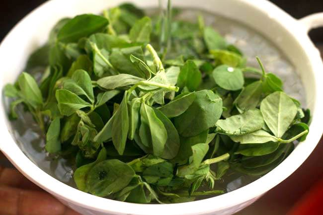
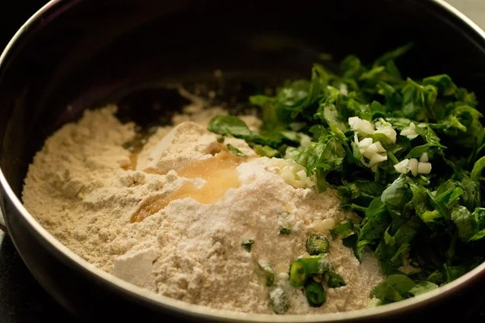
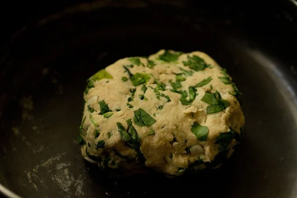
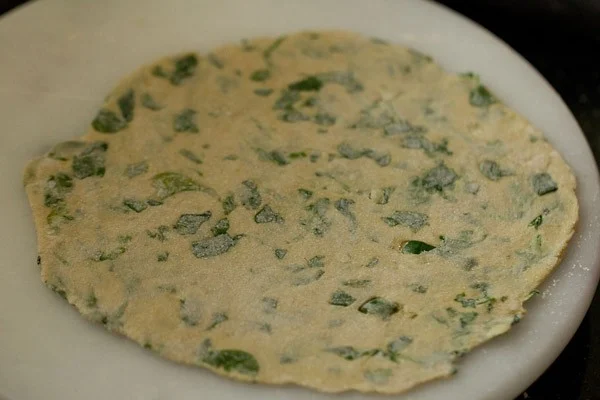
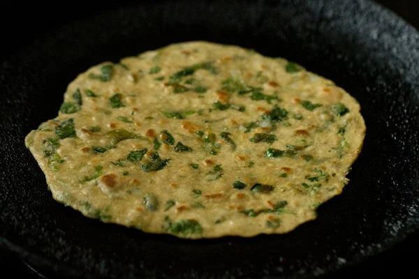

Before you begin making methi paratha recipe, you need to prep the leaves. So lets begin.
1. If you buy the fenugreek from the market, first pluck about 1 cup of methi leaves. Then in a bowl, soak the plucked leaves with enough water, 1 tablespoon vinegar and ½ teaspoon baking soda for about 3 to 4 minutes. Gently mix. The baking soda and vinegar gets rid of pesticides from the leaves.

2. Drain this water using a colander.
3. Soak the leaves again in
fresh clean water in a bowl for a couple of minutes. Later move the methi
leaves gently in the water. This will remove any soil or mud particles
that are on the stems or leaves. Drain the water. You can repeat this
process once or twice or opt to thoroughly rinse the leaves under running
water for a few times. Finally, drain all the water.
4. Place the
leaves on a kitchen towel and spread them evenly on it for a few minutes
or you can proceed to chopping them. Another method is to use a wired rack
and place the leaves on it.
Keep a tray below the wired rack to collect any water droplets. Finely
chop the leaves and set aside.
In a bowl add 2 cups of whole wheat flour and ½ teaspoon salt or as required. Add the chopped fenugreek leaves, ½ to 1 teaspoon chopped green chilies (1 to 2 green chillies), 1.5 teaspoons of finely chopped garlic and 2 teaspoons oil. Use a stand-mixer for kneading the dough if you have it.

2. Pour ⅓ cup of water bit by bit. Do not add all the water at once. Add a portion of water as you go on working on the dough. The fenugreek leaves will release a good amount of water, so take a note of this while kneading. Keep in mind that the water proportion will vary with the water content in the fenugreek leaves and the type, variety of wheat flour.

3. First mix and then start to knead the dough. Add water as needed when
you go about kneading the dough.
4. Knead the mixture into a smooth, soft and pliable dough. Add more water
if required while kneading.
Tip 1: If the dough feels sticky, add a
few tablespoons of whole wheat flour and knead again.
Tip 2: If the
dough is dry or dense, add a couple of tablespoons of water and continue
to knead.
5. Pinch medium-sized portions from the dough. Roll the dough between your
palms to make a neat round ball of dough.
6. Lightly flatten the dough ball and keep it on the rolling board.
Lightly dust the dough ball and the rolling board with some flour. Start
rolling the paratha with a rolling pin.
7. Roll the dough into
medium-sized roti or circles having about 7 to
8 inches diameter,
sprinkling flour as needed. For a flaky, crispy layered paratha, spread
ghee/oil all over and fold twice into a triangle shape. Then roll into a
triangular shaped paratha dusting flour lightly. The layering method with
ghee or oil adds more fat in your parathas, but if you want a simple
lighter version, then roll them plain with brushing any fat on the dough
as I have done.

8. Place the paratha on a hot skillet or tawa. Keep the heat to
medium-high or high before you place the paratha on it. The tawa has to
hot before you start making the paratha.
Tip: To check the hotness of the skillet, sprinkle a pinch of flour on it.
If the flour browns in a few seconds, the skillet is hot enough for
roasting paratha. Wipe this roasted flour on the skillet with a kitchen
napkin before placing the paratha.

9. When one side is a bit cooked or about ¼ cooked, flip it. You will see
some air pockets beginning to form on the paratha.
10. Spread oil or ghee (clarified butter) on this side that is facing you.
Use any neutral oil or peanut oil for roasting.
11. Flip again and you should see some brown or golden spots on the
paratha. Spread ghee on this side which has the golden spots.
12. Flip again a couple of times until the methi paratha is evenly cooked
and has golden spots or blisters. Press the edges with a spatula so that
they get cooked well.
While making the second paratha don’t forget to wipe the skillet with a
kitchen napkin if there is any excess whole wheat flour on it.